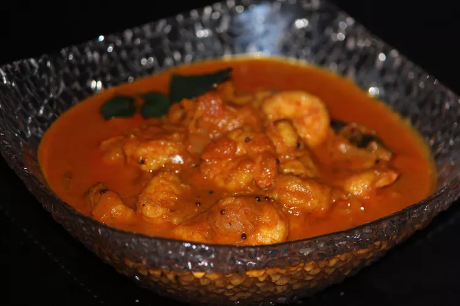

Shrimp Curry

Description
Absolutely delicious and easy South Indian curry. One of my husband's favorite dishes. Shrimp cooked in spiced, creamy onion and tomato-based gravy with a subtle coconut flavor. I have used Instant Pot® Duo Mini (the 3-quart size). Serve with rice or roti.
Ingredients
- 2 tablespoons coconut oil
- 1 tablespoon black mustard seeds
- 1 sprig fresh curry leaves
- 1 teaspoon ginger-garlic paste
- ¼ teaspoon fenugreek powder
- 1 small onion, sliced
- 1 medium tomato, chopped
- 1 teaspoon salt
- ¼ teaspoon turmeric powder
- 2 tablespoons water
- 2 tablespoons Kashmiri red chili powder
- 1 ½ tablespoons coriander powder
- ¼ teaspoon cumin powder
- 2 tablespoons tamarind pulp
- 2 ¼ cups water, divided
- 12 ounces raw medium-large shrimp, peeled and deveined
- 2 tablespoons coconut cream
Directions
- Turn on a multi-functional pressure cooker (such as Instant Pot®) and select the Saute function. Add oil, mustard seeds, curry leaves, ginger-garlic paste, and fenugreek powder. Stir well to prevent burning or sticking to the pot. Add onion and tomato, along with salt and turmeric. Saute until onions are translucent, 3 to 4 minutes.
- Meanwhile, combine 2 tablespoons water, Kashmiri red chili powder, coriander, and cumin into a paste in a small bowl. Add spice paste to the onions in the pot and stir well for 1 minute. Add tamarind and 1/4 cup water and stir to prevent burning or sticking to the pot. Cook and stir until oil starts separating out, 3 to 5 minutes. Add 2 cups water and cover the pot with the lid. Simmer 2 minutes more on Saute mode.
- Add shrimp and stir well. Close and lock the lid. Select high pressure and set the timer for 3 minutes. Allow about 10 minutes for pressure to build.
- Release pressure using the natural-release method according to manufacturer's instructions for 10 minutes. Release remaining pressure carefully using the quick-release method according to manufacturer's instructions, about 5 minutes. Unlock and remove the lid.
- Select Saute mode again and stir coconut cream into the curry. Simmer until thickened, 3 to 4 minutes. Season with salt, if desired.